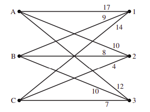
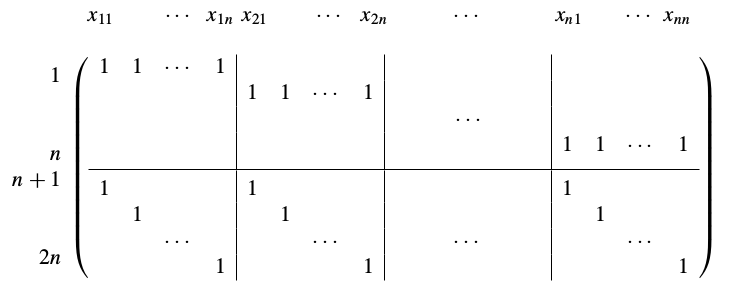

Lineer Programlar, Örnekler
Bir lineer program (LP),
$$ \min_x c^Tx \quad \textrm{öyle ki} $$ $$ Dx \le d $$ $$ Ax = b $$
formundaki problemlerdir. Atama problemleri, nakliyat (transportation) problemleri hep LP olarak çözülebilir.
Örnekler
Bir atama problemi gorelim. Ufak [1, sf. 29] örneğinden hareket edelim, elimizde üç tane işçi A, B, C var, ve üç tane iş 1,2,3 var. Her işçinin her işi ne kadar sürede yaptığı alttaki tabloda. Satırlar işçi, kolonlar iş,
C = [[17,10,12],[9,8,10], [14,4,7]]
C = np.array(C)
print (C)
[[17 10 12]
[ 9 8 10]
[14 4 7]]
Problemin yapısı alttaki ağ ile gösterilebilir,

Karar değişkenleri $x_{A1}$, $x_{A2}$, .. şeklinde olacak. o zaman bedel
$$ 17 x_{A1} + 10 x_{A2} + 12 x_{A3} + 9 x_{B1} + 8 x_{B2} + 10 x_{B3} + 14 x_{C1} + 4 x_{C2} + 7 x_{C3} $$
Önemli bir nokta her işin sadece bir kişiye verilmesi. Bunu mesela A için
$$ x_{A1} + x_{A2} + x_{A3} = 1 $$
kısıtlaması ile hallederiz, B,C için benzer durum.
Her isin tek kisiye verilmesi icin, mesela 1 icin
$$ x_{A1} + x_{B1} + x_{C1} = 1 $$
kısıtlaması, 2,3 için benzer şekilde halledilir. Tüm bu kısıtlamaları matris formunda vermek için, alttaki gibi bir matris yaratılabilir,

Notasyon $x_{11}$ diyor bizim örnek için $x_{A1}$ diye düşünülebilir. Bu matrisi LP çözümüne $Ax = b$ kısıtlaması olarak verebiliriz, $Ax$ çarpımını takip edersek bu çarpımın belli $x$'ler üzerinde toplama yaptığını görüyoruz, mesela ilk satır sol üst blok $x_{A1} + x_{B1} + x_{C1} $ toplamını yapıyor ve ona tekabül eden kısma $b$ içinde 1 verirsek, LP mekanizması bu kısıtlamaya göre gerisini halleder.
Kodda yapalım,
n = 3
X = np.zeros((2*n,n**2))
X[0,0:n] = np.ones((1,n))
X[1,n:n+n] = np.ones((1,n))
X[2,2*n:2*n+n] = np.ones((1,n))
X[3:6,0:3] = np.eye(n,n)
X[3:6,3:6] = np.eye(n,n)
X[3:6,6:9] = np.eye(n,n)
print (X)
[[1. 1. 1. 0. 0. 0. 0. 0. 0.]
[0. 0. 0. 1. 1. 1. 0. 0. 0.]
[0. 0. 0. 0. 0. 0. 1. 1. 1.]
[1. 0. 0. 1. 0. 0. 1. 0. 0.]
[0. 1. 0. 0. 1. 0. 0. 1. 0.]
[0. 0. 1. 0. 0. 1. 0. 0. 1.]]
print (C.flatten())
[17 10 12 9 8 10 14 4 7]
Şimdi LP çağrısı,
b = [1, 1, 1, 1, 1, 1]
from scipy.optimize import linprog
res = linprog(C.flatten(), A_eq=X, b_eq=b)
res = np.round(res.x)
print (res)
[0. 0. 1. 1. 0. 0. 0. 1. 0.]
Yani $x_{A3}$, $x_{B1}$, $x_{C2}$ ataması yapıldı. Doğrulamasını yapalım,
row_ind, col_ind = linear_sum_assignment(C)
print (col_ind)
print (row_ind)
print (C[row_ind, col_ind].sum())
[2 0 1]
[0 1 2]
25
Aynı sonucu aldık.
Kaynaklar
[1] Hebborn, Decision Mathematics, https://www.pearsonschoolsandfecolleges.co.uk/Secondary/Mathematics/16plus/HeinemannModularMathematicsForEdexcelASAndALevel/Samples/Samplematerial/Chapter2.pdf
[2] Burkard, Assignment Problems
Yukarı